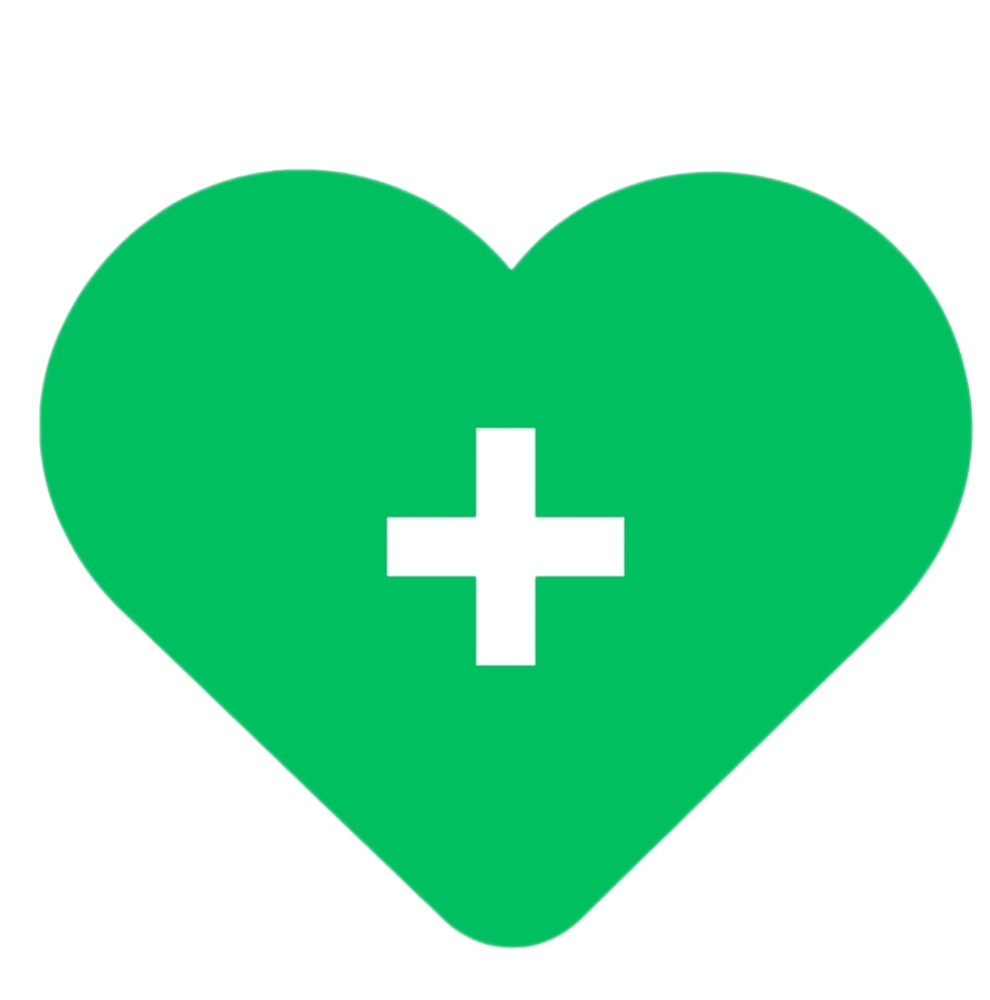

Cura di Me
Un progetto open source incentrato sul benessere personale, sociale e relazionale. Una raccolta di risorse, storie condivise e spunti pratici per prendersi cura di sé giorno dopo giorno.

Un progetto open source incentrato sul benessere personale, sociale e relazionale. Una raccolta di risorse, storie condivise e spunti pratici per prendersi cura di sé giorno dopo giorno.